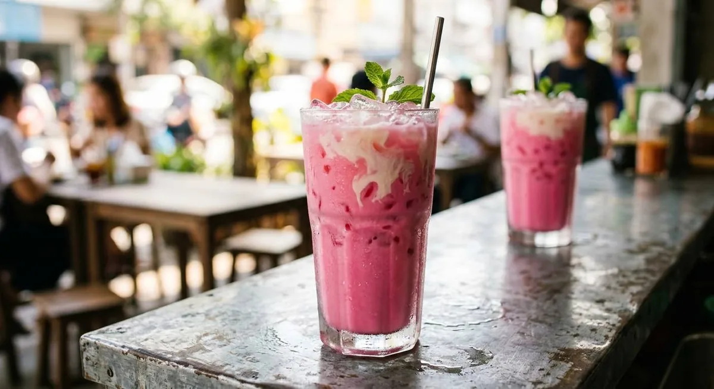

Red sala syrup, condensed milk and fresh milk over ice — the bubblegum-pink glass every Thai café sells by the hundred.

นมเย็น — literally "cold milk" — is the drink that made Thai cafés famous for colour. Both major sources give the same architecture: fresh milk, sweetened condensed milk, and red syrup over ice, finished with a drizzle of evaporated milk. The Kapook version keeps the syrup at two teaspoons; Wongnai's make-to-sell version doubles it to two tablespoons. Either way the colour is the point — the syrup is น้ำหวานสีแดง, red sala-flavoured syrup, the Hale's Blue Boy bottle that sits on every stall shelf.
The Wongnai source even gives the drink two names — นมเย็น and นมชมพู ("pink milk") — because Thai vendors use both for the same glass. Kapook's roundup takes the base drink in three directions: the classic pink, a butterfly-pea version steeped to deep blue, and a strawberry version built on canned strawberries. All three share the same milk-and-condensed-milk body; only the colouring changes.
There is no brewing, no steeping, no waiting — the drink is assembly, and the only failure mode is flat sweetness. The Kapook method puts the condensed milk and syrup in with the fresh milk and stirs until evenly pink, then ices it; the evaporated milk goes on top, not through, so the first sip comes through creamy.
| Thai | English | Amount |
|---|---|---|
| นมสด | Fresh milk | 150 ml |
| นมข้นหวาน | Sweetened condensed milk | 30 ml |
| น้ำหวานสีแดง | Red sala syrup (Hale's Blue Boy) | 2 tsp – 2 tbsp |
| น้ำแข็ง | Ice | 1 full glass |
| นมข้นจืด | Evaporated milk (to drizzle) | to taste |
The butterfly-pea variant (Kapook): 1 cup butterfly pea flowers steeped in 1 cup hot water until deep blue, strained, then ½ cup fresh milk and 4 tbsp condensed milk stirred in, over ice.
The name. Wongnai titles it นมเย็น-นมชมพู — "cold milk" and "pink milk" are the same drink, and Thai vendors use both. Order either, get the same glass.
How much syrup. Kapook's 2 teaspoons makes a pale pink; Wongnai's 2 tablespoons makes the deep stall pink. The syrup is sweet, so the dose is the flavour dial.
What finishes the glass. Both drizzle evaporated milk on top; Kapook also allows whipped cream as the topping. The evaporated milk is the traditional finish.
The colouring. Red sala syrup is the classic, but Kapook's roundup treats butterfly-pea blue and strawberry pink as legitimate versions of the same drink — same body, different colour.
This recipe is translated from the following Thai-language sources. Where they disagree, we've said so.
1. Kapook — "7 สูตรทำนมเย็น เครื่องดื่มรสละมุนสีสันคัลเลอร์ฟูล" (the classic pink + butterfly-pea and strawberry variants) — cooking.kapook.com
2. Wongnai — "วิธีทำ นมเย็น-นมชมพู เมนูเครื่องดื่มรสหวานมันสดชื่น ทำขายเลิศ!" (the make-to-sell version, both names) — wongnai.com
3. Pantip (ครัวป้ามารายห์) — "เค้กนมเย็นหน้านิ่ม" (confirms Hale's Blue Boy red syrup as the colouring standard in the wider nom yen family) — pantip.com